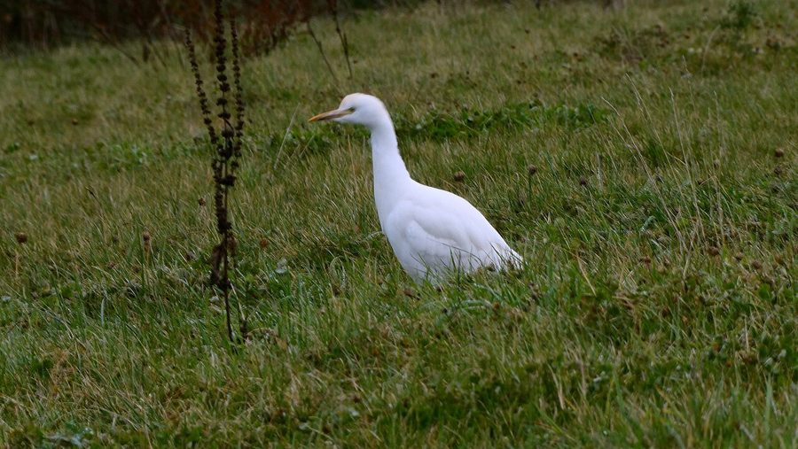

गाय बगुलाCattle Egret
Bubulcus ibis · Ardeidae · BRD-0029

- Scientific name
- Bubulcus ibis (Linnaeus, 1758)
- Family
- Ardeidae
- Hindi
- गाय बगुला
- Status here
- native
- IUCN
- LC
When to look कब देखें
Present all year.
गाय बगुला / Cattle Egret
Bubulcus ibis (Linnaeus, 1758) — Ardeidae
गाय बगुला (कैटल इग्रेट) — पूर्वी उत्तर प्रदेश के ग्रामीण परिदृश्यों में चरते हुए पशुओं (गायों, भैंसों) के पैरों के पास पाया जाने वाला एक अत्यंत परिचित, छोटे आकार का सफ़ेद बगुला है। यह पानी में मछली पकड़ने के बजाय ज़मीन पर घूमकर कीड़े-मकोड़े खाना पसंद करता है। जैसे ही पशु घास चरते हुए आगे बढ़ते हैं, उनके पैरों की हलचल से छिपे हुए टिड्डे और कीड़े बाहर निकलते हैं, जिन्हें यह तुरंत पकड़ लेता है। गैर-प्रजनन काल में इसका पूरा शरीर सफ़ेद होता है और चोंच पीली होती है, लेकिन मानसून के दौरान प्रजनन काल में इसके सिर, गर्दन और पीठ पर सुंदर नारंगी-भूरी (buff-orange) लंबी पंख-कलगी निकल आती है।
Quick Identification त्वरित पहचान
| Feature | Description |
|---|---|
| Size | Small, stocky egret (48–53 cm total length); neck relatively short and thick |
| Colouration | Entirely white in non-breeding plumage; yellow bill and yellowish-green legs |
| Breeding Plumage | Distinct orange-buff (golden) feathers on crown, breast, and back in monsoon |
| Bill | Relatively short, stout, and yellow (turns orange-pink during peak breeding) |
| Legs | Yellowish-grey or olive-green; turn bright pink-red for a few days during breeding |
| Behaviour | Commensal association with grazing cattle; runs alongside cows to catch flushed prey |
Field tip: Look in agricultural pastures. A flock of white birds walking closely around the legs of cows and buffaloes, rather than wading in deep water, is always the Cattle Egret.
Morphology आकारिकी
Biometrics (typical measurements in the northern Indian plains):
| Measurement | Range |
|---|---|
| Total length | 480–530 mm |
| Wing (flattened chord) | 240–260 mm |
| Tail | 80–95 mm |
| Tarsus | 70–80 mm |
| Bill (culmen from base) | 52–60 mm |
| Weight | 300–400 g |
Plumage: In non-breeding adults and juveniles, the plumage is pure white. During the breeding season (monsoon), adults undergo a striking change, developing long, filamentous, orange-buff feathers on the crown, chest, and back.
Bare parts: The bill is relatively short, straight, and yellow. The irises are yellow. The legs and feet are dull yellow-green or grey. During the courtship period, the bill, iris, and legs turn bright reddish-pink for a brief window of 10–14 days.
Vocalisations
Cattle Egrets are generally silent away from nesting colonies.
- Flight Call: A low, harsh, croaking rick-rack or truk-truk, given occasionally when flying between feeding areas.
- Colony Call: A loud, guttural, repeating kraaa-kraaa or korr-korr, used extensively during nest defense and territorial disputes in breeding colonies.
Ecological Role पारिस्थितिक भूमिका
Commensal insectivore.
- commensal relationship: They follow grazing cattle, buffaloes, and tractors. As the animals move, they flush out grasshoppers, crickets, and frogs. This increases the bird's foraging efficiency by up to 50% compared to solitary foraging.
- Agricultural ally: They consume vast quantities of crop pests (caterpillars, beetles, ticks) directly from pastures.
- Colonial nester: Nest in large, mixed-species colonies (heronries) with pond herons, cormorants, and starlings, creating high nutrient inputs (guano) that enrich the soil beneath the trees.
Life Cycle / Phenology जीवन चक्र
- Breeding season: May to August, coinciding with the arrival of the monsoon.
- Nesting: They nest colonially in tall trees (tamarind, babool, mango), often located in the middle of village settlements.
- Nest structure: A shallow, untidy platform of dry twigs built in tree forks, constructed by both sexes.
- Clutch size: 3 to 5 pale greenish-blue eggs.
- Incubation: 21–25 days, shared by both parents.
- Fledging: Both parents feed the chicks by regurgitating insect masses. The young fledge and leave the nest in 30–35 days.
Host Plants or Prey आहार
Primary food items:
- Insects: Grasshoppers, crickets, flies, beetles, and moth caterpillars.
- Invertebrates: Earthworms, snails, and ticks (sometimes picked directly off cattle).
- Vertebrates: Small frogs (such as Fejervarya limnocharis), garden lizards, and field mice.
Predators / Natural Enemies शत्रु
- Raptors: Bonelli's Eagles and Black Kites prey on juveniles.
- Corvids: House Crows (Corvus splendens) systematically raid nesting colonies to steal eggs and nestlings.
- Mammals: Common Mongoose (Herpestes edwardsii) may capture low-nesting birds.
Agricultural / Human Relevance कृषि प्रासंगिकता
Natural pest controller. They are highly beneficial in agriculture, acting as natural pest suppressors by consuming crop-damaging insects in sugarcane, wheat, and rice fields.
Because they feed in dry pastures, they are vulnerable to secondary poisoning from organophosphate pesticides and veterinary drugs (such as diclofenac) present in livestock waste.
Expected Locally स्थानीय रूप से अपेक्षित
Not a field record. Written from published accounts for eastern Uttar Pradesh. No confirmed local sighting yet — if you have seen it, that is what the atlas needs.
अभी तक स्थानीय पुष्टि नहीं। यह विवरण प्रकाशित स्रोतों से है, किसी अवलोकन से नहीं।
A very common resident throughout Basti district. They are seen in large numbers following local buffaloes in the wet grasslands of the Ghaghra river basin. Mixed heronries are frequently observed in large tamarind (Tamarindus indica) trees inside villages, creating a noisy spectacle from June to August.
Distribution वितरण
Global range: Widespread across the Americas, southern Europe, Africa, Western Asia, and the Indian Subcontinent, to Southeast Asia and Australia.
In India: Widespread in plains and lowlands throughout the country.
In Uttar Pradesh: Abundant resident in all agricultural districts.
In Basti district / eastern UP: Found in high numbers near all crop margins and rural grazing lands.
Research Questions शोध प्रश्न
Anyone can investigate these | कोई भी इन प्रश्नों की जाँच कर सकता है
- How much does the presence of grazing cattle increase the prey capture rate of Cattle Egrets in local pastures? — Compare capture rates of birds foraging with cattle vs. those foraging alone.
- What are the primary tree species selected by Cattle Egrets for establishing breeding heronries in your village? — Map colonies and note tree preferences.
- What is the impact of House Crow nest predation on the breeding success of Cattle Egrets in mixed colonies? — Record nest losses due to crow attacks.
- Do Cattle Egrets follow tractors during mechanical tilling, and does it change their diet? / क्या गाय बगुले जुताई के दौरान ट्रैक्टरों का पीछा करते हैं, और क्या इससे उनके आहार में कोई बदलाव आता है? — Observe foraging behavior in freshly ploughed fields.
- How does the veterinary use of drugs in livestock affect egrets nesting near village cattle sheds? / पशुओं के इलाज में प्रयुक्त दवाओं का गाँव के गोशालाओं के पास घोंसला बनाने वाले बगुलों पर क्या प्रभाव पड़ता है? — Monitor nesting health over time.
Similar Species मिलती-जुलती प्रजातियाँ
| Species | Key Difference | हिंदी |
|---|---|---|
| Little Egret (Egretta garzetta) | Slender build; black bill; black legs with bright yellow feet; feeds strictly in shallow water | छोटा बगुला — पतली गर्दन, काली चोंच और काले पैर-पीले पंजे |
| Indian Pond Heron (Ardeola grayii) | Cryptically colored brown and buff back; only looks white in flight; feeds near water edges | बगुला — भूरा-चित्तीदार पीठ, केवल उड़ते समय सफेद दिखता है |
| Great Egret (Ardea alba) | Much larger (90 cm); extremely long S-shaped neck; black legs; yellow bill | बड़ा बगुला — विशाल आकार और बहुत लंबी मुड़ी हुई गर्दन |
Field rule: Small size, stocky neck, yellow bill (orange in breeding), yellowish-green legs, and terrestrial foraging behavior alongside grazing livestock.
Taxonomy & Classification वर्गीकरण
Original description. Carl Linnaeus described the Cattle Egret as Ardea ibis in 1758 in his work Systema Naturae, 10th edition (Vol. 1, p. 144). The type locality was Egypt. The genus name Bubulcus was introduced by Charles Lucien Bonaparte in 1855, which is Latin for "herdsman," referencing the bird's association with cattle. The species name ibis is the Greek name for a wading bird.
Subspecies. Three subspecies are recognized. The subspecies found in UP is:
| Subspecies | Authority | Range | Notes |
|---|---|---|---|
| B. i. coromandus | (Boddaert, 1783) | India, Southeast Asia, East Asia, Australia | UP subspecies; often treated as a separate species (Eastern Cattle Egret) due to deeper orange breeding plumage |
Family and order placement. Placed in the order Pelecaniformes, family Ardeidae, subfamily Ardeinae.
Phylogenetic notes. Bubulcus ibis is sister to the genus Ardea (true herons) but is placed in its own genus due to its specialized terrestrial adaptations.
IUCN status rationale. Listed as Least Concern (LC) because of its extremely large geographic range, expanding population, and lack of conservation threats.
Photo Gallery फोटो गैलरी
References संदर्भ
- Linnaeus, C. (1758). Systema Naturae per regna tria naturae. Editio Decima. Laurentii Salvii, Holmiae, p. 144. [original description]
- Ali, S. & Ripley, S. D. (1999). Handbook of the Birds of India and Pakistan. Vol. 1. Oxford University Press, New Delhi.
- Grimmett, R., Inskipp, C. & Inskipp, T. (2011). Birds of the Indian Subcontinent. 2nd ed. Christopher Helm, London.
- Telfair, R. C. (1983). The Cattle Egret: A History of the Texas Invasion and World-Wide Expansion. Texas A&M University Press.
- BirdLife International (2024). Bubulcus ibis. IUCN Red List of Threatened Species. Ver. 2024.
- GBIF Occurrence Data — Bubulcus ibis, Uttar Pradesh (2010–2025).
Source file: species/fauna/birds/cattle_egret.md